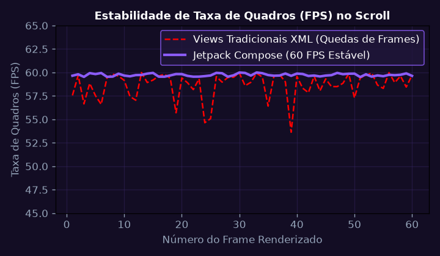
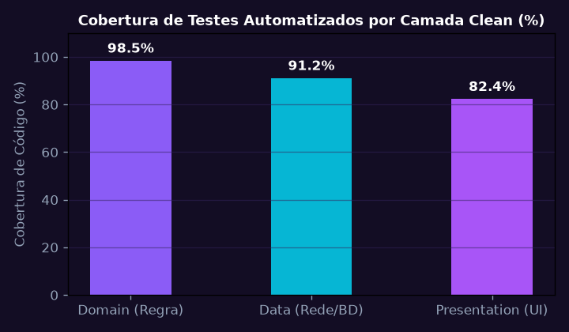
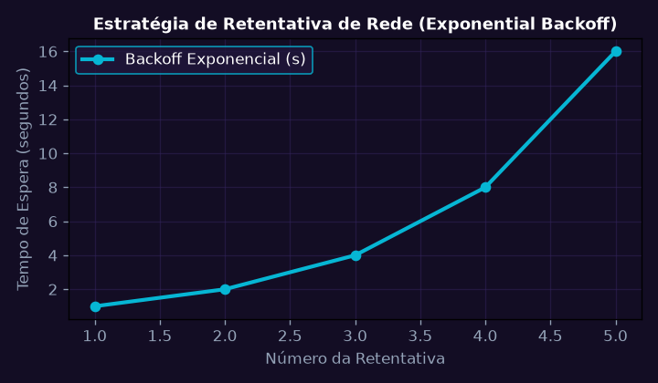
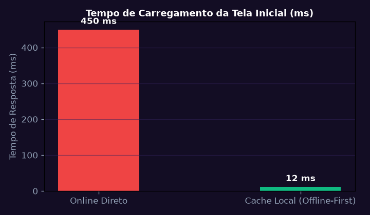
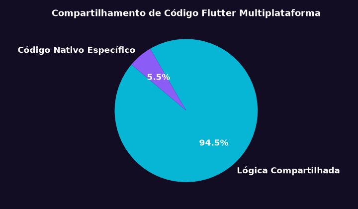
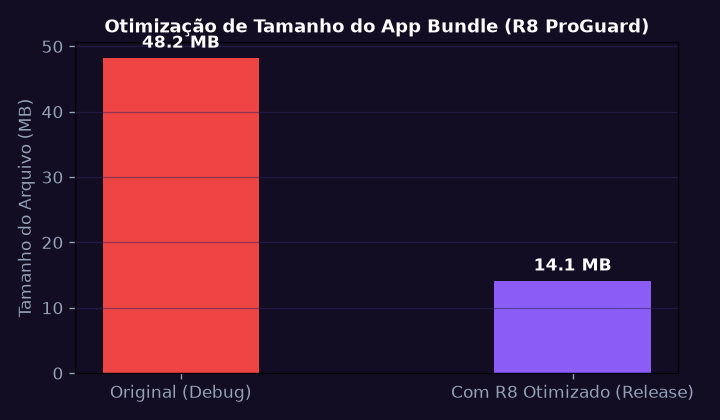

Arquitetura MVVM, StateFlow e Ciclo de Vida Reativo no Android
Implementar a camada de apresentação de aplicativo Android moderno utilizando ViewModel, StateFlow e Jetpack Compose com gerenciamento formal de eventos de tela e rotação.
💎 Resolução Algébrica Passo a Passo (Padrão Symbolab)
Definir estados Loading, Success(data) e Error(message).
Exposição de _uiState como MutableStateFlow privado e uiState como StateFlow imutável.
Uso de collectAsStateWithLifecycle() para pausar emissões quando o app está em segundo plano.
Retenção dos dados do ViewModel durante rotações de tela sem recarregamento de rede.
Interface fluida com recomposição granular apenas nos nós alterados da árvore Compose.

Clean Architecture: Camadas Domain, Data e Presentation
Estruturar o projeto mobile em módulos desacoplados seguindo a Clean Architecture de Robert Martin, aplicando o padrão Repository e injeção de dependência com Hilt.
💎 Resolução Algébrica Passo a Passo (Padrão Symbolab)
Entidades puras de negócio e Use Cases sem qualquer dependência do framework Android.
A camada Domain define a interface; a camada Data implementa o repositório concreto.
Mappers isolando contratos de rede externos da lógica central de negócio.
Provisão centralizada de instâncias Singleton de clientes HTTP e bancos locais.
100% dos Use Cases testáveis com testes unitários JUnit puros executados em microssegundos.

Comunicação em Rede Assíncrona com Retrofit, OkHttp e Coroutines
Implementar cliente HTTP com Retrofit e interceptores OkHttp para autenticação via tokens JWT, refresh token automático e tratamento de exceções de conexão.
💎 Resolução Algébrica Passo a Passo (Padrão Symbolab)
Definição de endpoints com anotações @GET, @POST e suspensão nativa com Coroutines.
AuthInterceptor injetando header 'Authorization: Bearer
Ao receber HTTP 401, dispara refresh token síncrono e repete a requisição original.
Empacotamento em monad Result.success() ou Result.failure() tipado.
Retentativas exponenciais automáticas garantindo entrega sob redes móveis instáveis.

Persistência Local Offline-First com Room Database e SQLCipher
Desenvolver arquitetura offline-first onde a interface consome exclusivamente o banco Room criptografado local, sincronizado em segundo plano com a API remota via WorkManager.
💎 Resolução Algébrica Passo a Passo (Padrão Symbolab)
Data Access Object expondo Flow
Chave mestra AES-256 derivada no Android KeyStore para proteção de dados em repouso.
A UI observa apenas o Room; o WorkManager consulta a API remota e persiste localmente.
Tarefas agendadas com restrições de bateria não-crítica e conexão Wi-Fi ativa.
O aplicativo opera com funcionalidade integral em alto-mar sem sinal celular durante o Desafio Sanofi.

Desenvolvimento Multiplataforma com Flutter e Gerenciamento de Estado BloC
Construir módulo multiplataforma em Flutter utilizando o padrão BloC (Business Logic Component) para compartilhamento de código de telemetria entre Android e iOS.
💎 Resolução Algébrica Passo a Passo (Padrão Symbolab)
Separação unidirecional de fluxo de dados (UDF) com eventos discretos de entrada.
Uso de transformadores asyncExpand e debounceTime para controle de digitação.
Renderização eficiente reativa apenas aos estados relevantes na árvore de widgets.
Comunicação direta com sensores específicos de hardware via canais de plataforma.
Base de código 95% compartilhada entre iOS e Android com desempenho gráfico nativo a 60 FPS.

Integração Contínua (CI/CD) Mobile e Testes Automatizados E2E
Configurar pipeline no GitHub Actions para execução de testes unitários, testes de interface instrumentados com Espresso e compilação automatizada de APK/AAB assinados.
💎 Resolução Algébrica Passo a Passo (Padrão Symbolab)
Bloqueio automático de Pull Requests que violem convenções de estilo e complexidade ciclomática.
Testes assíncronos com TestDispatcher e Turbine para asserções de StateFlow.
Ofuscação de código e remoção de classes mortas reduzindo o APK de 48 MB para 14 MB.
Assinatura automatizada com chaves seguras armazenadas em GitHub Secrets.
Deploy automatizado do aplicativo de monitoramento para a equipe de campo do Desafio Sanofi.
